<br>
<h1>Unfinal Project</h1>
<h2>Intersubjective Meditation Biofeedback Lamp</h2>
<video width="640" height="480" controls class="center">
<source src="DEMO.MOV" type="video/mp4">
Your browser does not support the video tag.
</video>
<br>
<div>
<p>
My project came from the motivation to combine my background in clinical psychology and eastern philosophy
with a newly developing interest in technology to create digital therapies. It is a device intended to be
used either individually or in pairs, first as an aid to meditation or relaxation, and second as a way to
enhance intersubjective connection. (The Springer Encyclopedia of Psychology and Religion states, "Intersubjectivity... is most simply stated as the interchange of thoughts and
feelings, both conscious and unconscious, between two persons or “subjects,” as facilitated by empathy.) The device consists of two heartbeat or pulse sensors connected to an OLED display
and 4 LED strips which are controlled by an Arduino Uno. It is housed within a laser-cut pressfit plywood
box, atop which sits a 3D-printed spiral sculpture. A motor attachment was designed to rotate the sculpture but it was not feasible without interfering with the LED wiring.
The two heartbeat sensors are connected to 2 different LED strips, and a mapping function was going to increase the speed of rotation and intensity of the light spectrum as the difference in the two heartbeats decreased.</p>
<p>
</p>
<br><br>
<h2>Design and Inspiration:</h2>
<h3>John Edmark's Spirals</h3>
<div>
<p>
While researching examples of kinetic sculptures, I came across the work of John Edmark,
whose ideas became an incredible source of inspiration for me. Particularly his series of
"never-ending" Bloom zoetrope sculptures that utilize mathematical principles that create
the illusion of infinite movement when viewed under particularly calibrated strobe-lights,
or precise frame-rate photography. The overall theme of his work revolves around the use of
spirals due to the fascinating aesthetic and mathematical qualities they exhibit.
</p>
<br><br>
<iframe width="560" height="315" src="https://www.youtube.com/embed/B5p2A5mazEs" title="YouTube video player" frameborder="0" allow="accelerometer; autoplay; clipboard-write; encrypted-media; gyroscope; picture-in-picture; web-share" allowfullscreen></iframe>
<img src="https://d3ui957tjb5bqd.cloudfront.net/uploads/2017/01/blooms-1.gif">
<br><br>
<p>
One of Edmark's most interesting perspectives is that although his work could (not inaccurately) be
classified as a form of sculpture, his primary motivation was not to create sculptures. Rather,
the sculptures arose out of his exploration of the properties of the golden ratio, which
in more precise mathematical terms is described by the Greek letter Phi, or 1.618. This is closely
related to the "Golden Arc," or the angle of 137.5, and is a common pattern found in plants that
grow according to the principles of Phyllotaxis.
</p>
<p>Scientific research has proven this spiral growth
pattern to be the most spatially optimal way to arrange seeds or leaves that grow outward from a central
point. This may be similar to the reason that water droplets and bubbles are common forms found in nature,
due to the way they optimally distribute surface tension. This ties into an intriguing philosophical debate
around whether these properties are mathematical constants inherent to the structure of the universe, or if they
arise through an emergent process of "physical natural selection," due to the efficient way they shape matter.
</p>
<p>
Edmark's work was such a powerful inspiration because he opened my mind to the perspective that art didn't have to
be an end in itself with the creation of aesthetic objects. Art could also be a research method or tool with which
to explore scientific concepts in a new way by engaging the human subject. This is a novel approach to research
that could reveal unique insights previously overlooked by traditional methods of inquiry. Edmark's views led me
to see the fields of engineering, art, science, and mathematics as less disparate than typically assumed, and how
they could be united in a common aim: combining the creation of beauty with the pursuit of truth.
</p>
</div>
<h2>Process</h2>
Designing the pressfit housing unit in Fusion 360 and creating opening for electrical attachments.<br>
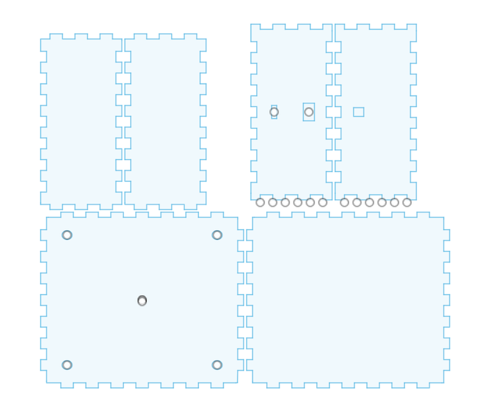<br><br>
Laser cutting the housing, originally designed to be more circular shaped with living hinges as side bodies.
The cut material turned out not to be pliable enough, so it was redesigned to have a square shape without hinges.<br>
<video width="400" height="400" controls class="center">
<source src="LaserCutting.MOV" type="video/mp4">
Your browser does not support the video tag.
</video><br><br>
Drilling Holes to attach the OLED display with M2 screws and nuts.<br>
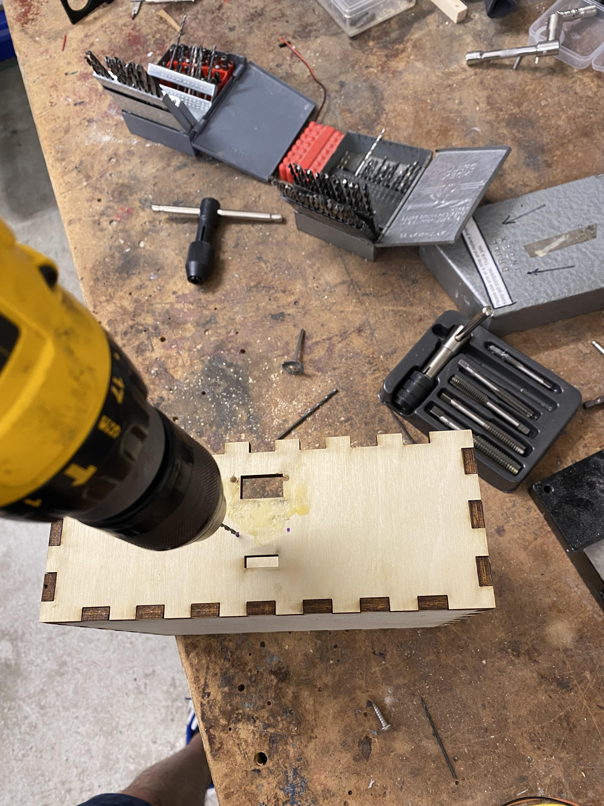<br><br>
Tapping to create screw threads<br>
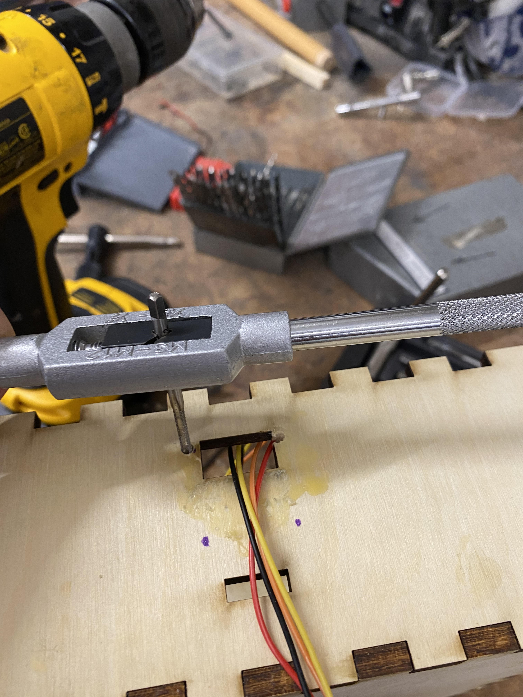<br><br>
Final Attachment <br>
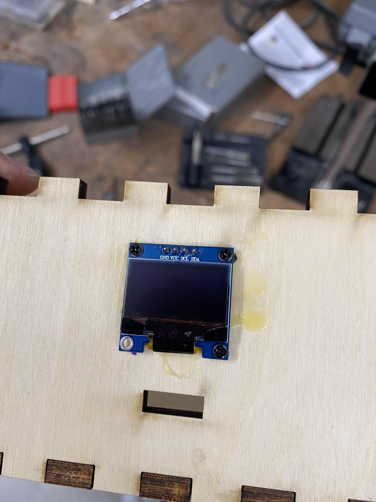<br><br>
First time soldering. Connect ground, power, and data wires to LED strips.<br>
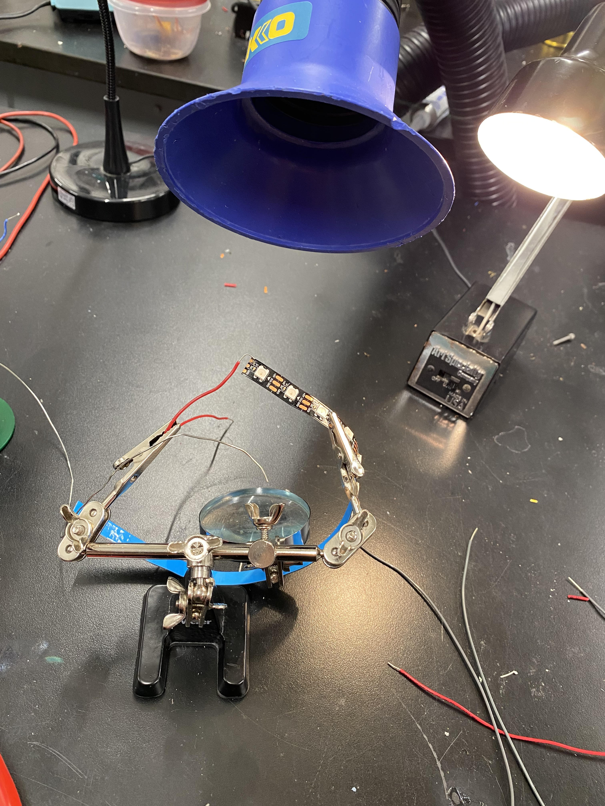<br><br>
Make sure when soldering to have the flow of current moving in the direction
of the arrows, or else they will not function properly.<br>
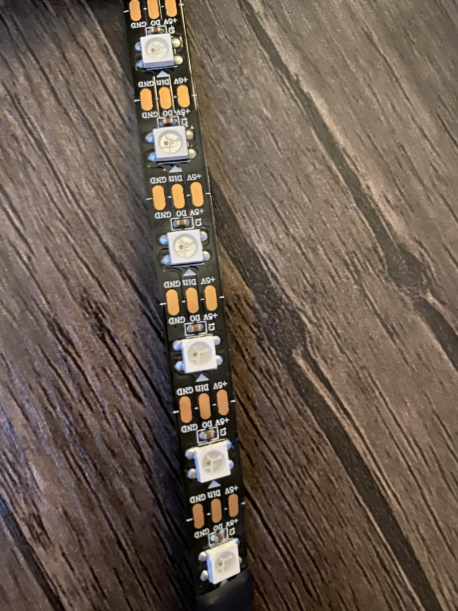<br><br>
Painstakingly designing and redesigning the spiral kinetic sculpture in Fusion 360.<br>
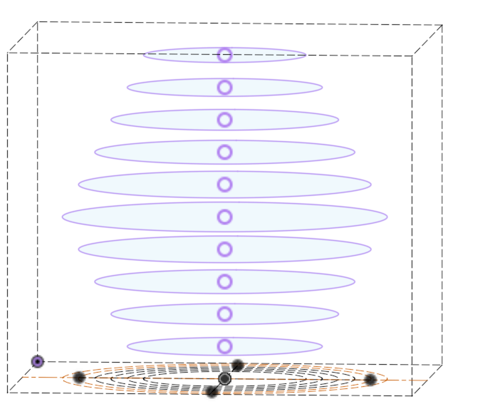
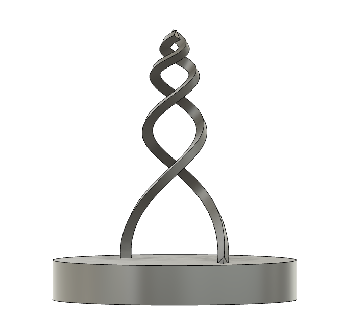
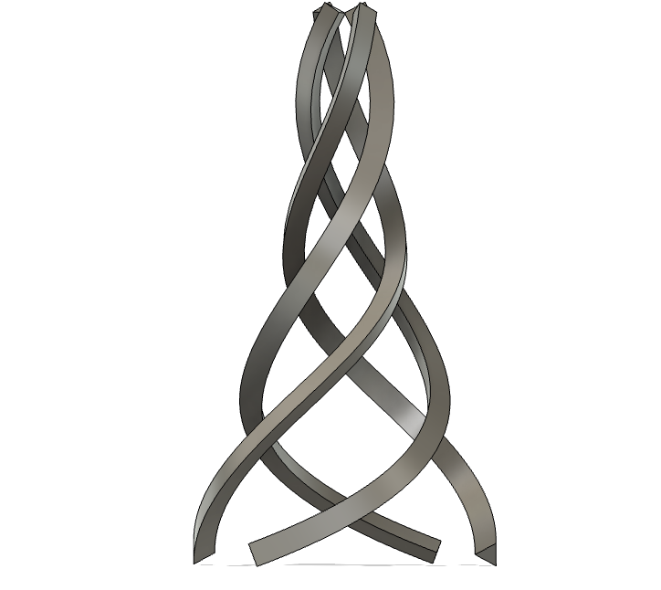
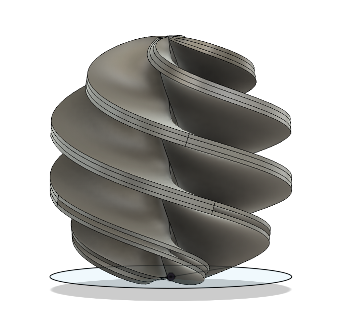<br><br>
Landing on a more tractable design form.<br>
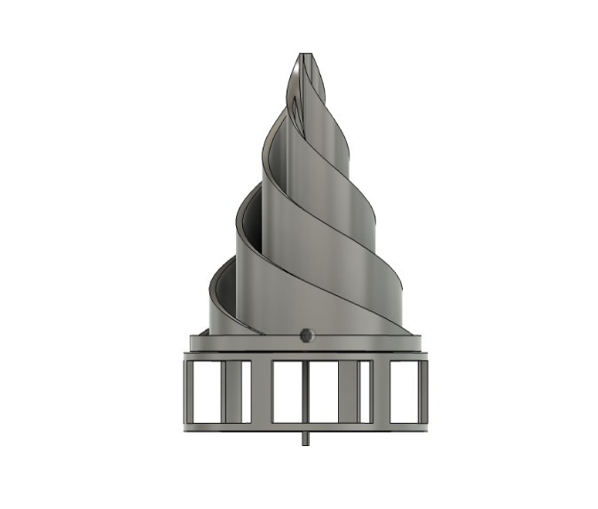<br><br>
3D printing with Prusa Slicer - 18 Hours. <br>
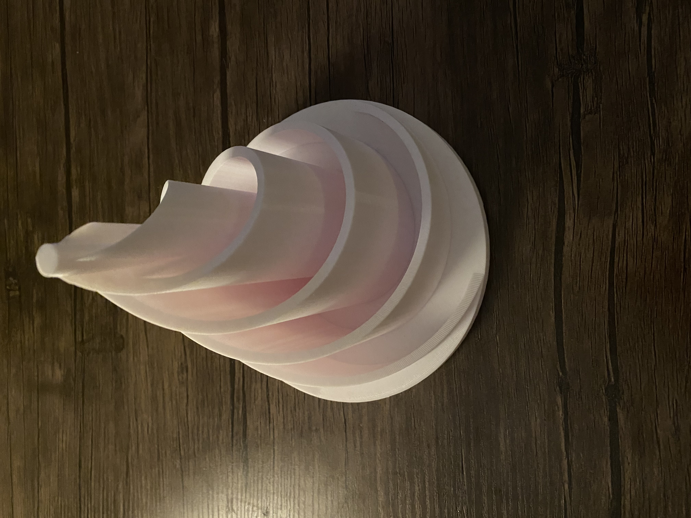<br><br>
Housing attachment and motor extension that was meant to create kinetic motion in the sculpture.<br>
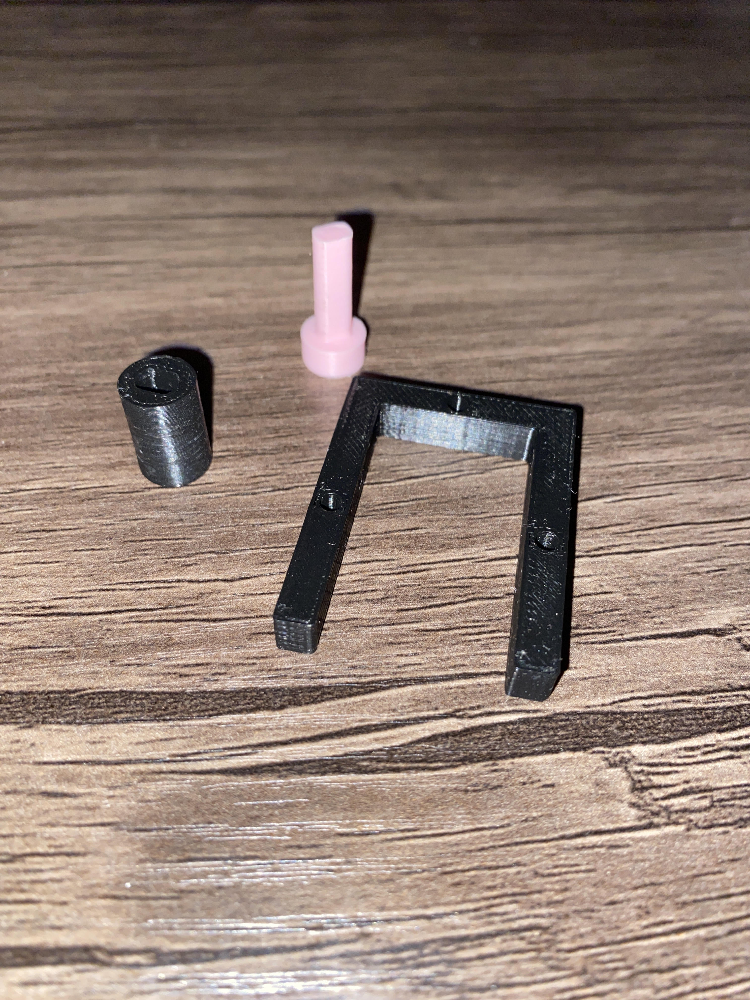<br><br>
The motor and slip ring that was used to try to get around the complication of the wires tangling during rotation,
but no viable solution was found that did not require extensive re-engineering within the given timeframe.
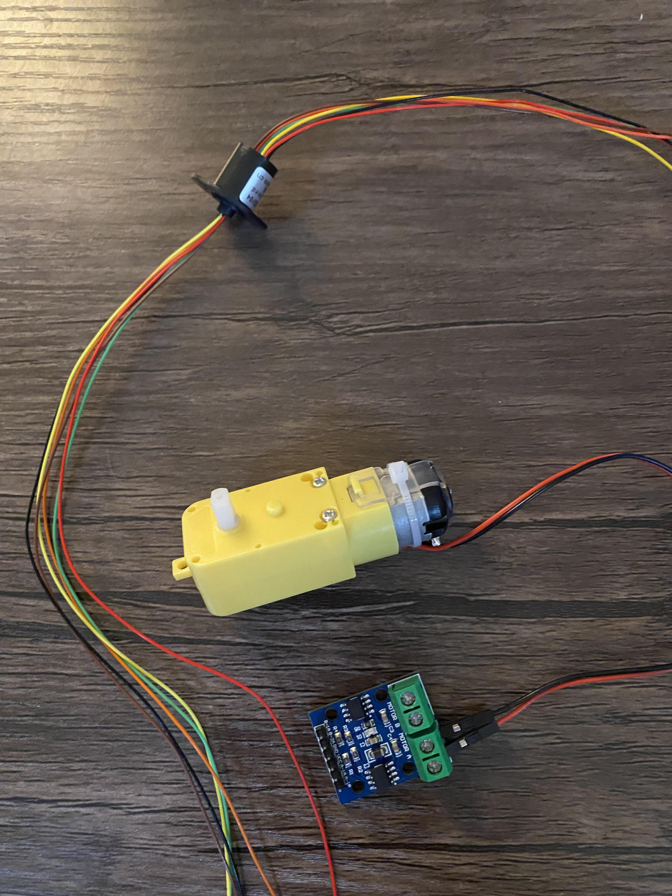<br><br>
The rotation without lights attached.<br>
<video width="400" height="400" controls class="center">
<source src="KINETIC.MOV" type="video/mp4">
Your browser does not support the video tag.
</video><br><br>
The project code: <a href="code.html">Link</a>
<h2>Issues</h2>
<br><h3>Code</h3><p>
One of the biggest problems encountered while coding the project is related to the pulse sensors
activating the lights. To reduce signal noise, pulses are only counted as detected when they
reach above a certain threshold. However for some reason when the lights began to be triggered
for the first time, this would set off an infinite loop within the circuitry, and the serial
outputs stated that the pulse sensors were continually sending a maximal signal as output. </p>
<p>
Due to the intentionally limited nature of the PulseSensorPlayground library, there was no easy
way to trouble shoot this issue. Additionally, the library API only allowed one to set a minimal
threshold, but not a maximal one. Therefore I had to manually create my own custom function
to approximate a max threshold detector. It would ignore any signal if it was near the maximum allowed,
but this created a necessary delay in the system that prevented seamless synchronization between the
the heartbeat sensor and the LEDs. In addition, this also prevented the two different light streams from
being activated simultaneously.
</p>
<h3>Perfectionism, or Anti-Prototyping</h3>
<h2>Conclusion</h2>
<br>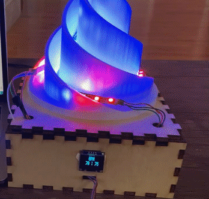<br><br><div>
<p>
I thought it important to call this an unfinal project, to center it as a beginning rather
than an ending. I want to further explore humanistic applications of technology, and biosensing has a unique ability to connect the human and digital worlds in a
way that could promote social connection, and create entirely new forms of interactivity.
</p></div>
</body>